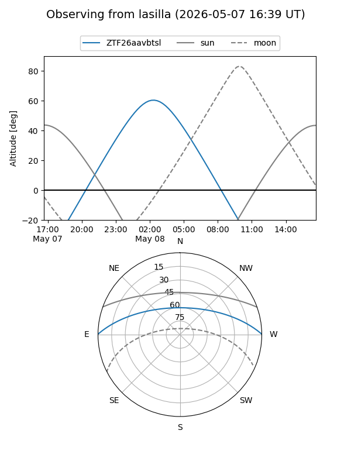
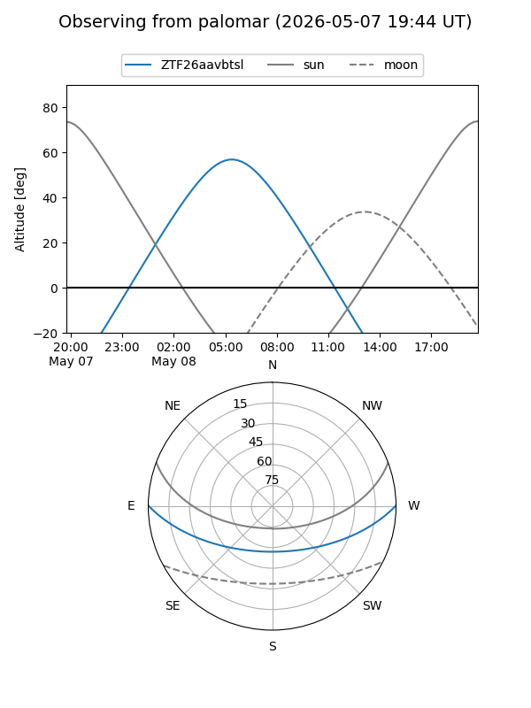

ZTF26aavbtsl
Target ZTF26aavbtsl at 2026-05-08 07:36
Aliases and brokers:
FINK: link
Lasair: link
ALeRCE: link
alt names
ZTF26aavbtsl (ztf,fink_ztf)
Coordinates:
equatorial (ra, dec) = 189.6522,+0.42760
equatorial (HMS+DMS) = 12:38:36.53,+00:25:39.36
galactic (l, b) = (295.8233,+63.12214)
Flags:
Photometry:
last ztfg=19.96
1 ztfg detections
Lightcurve
Visibility


Additional plots